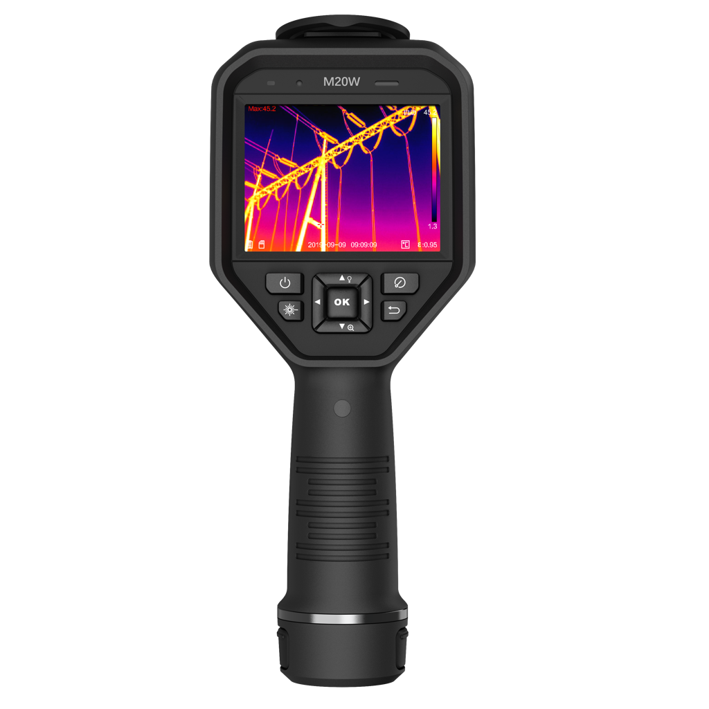

AI test: HIKMICRO M20WShape generated by AI (Hunyuan3D) from two HIKMICRO product renders; the photos are projected onto it. Drag to turn.

Original render by HIKMICROAI test: HIKMICRO M20WShape generated by AI (Hunyuan3D) from two HIKMICRO product renders; the photos are projected onto it. Drag to turn.

Original render by HIKMICRO